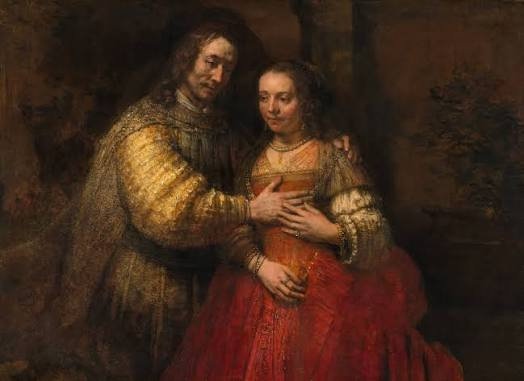
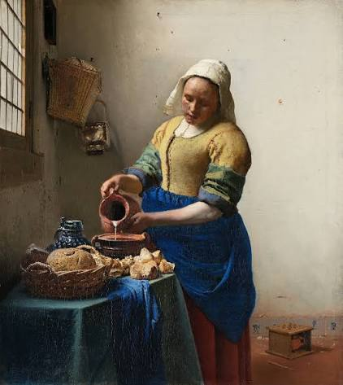
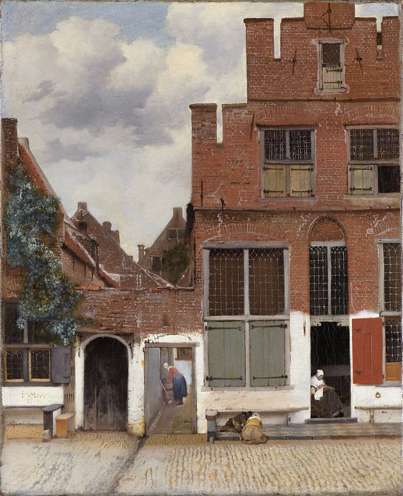
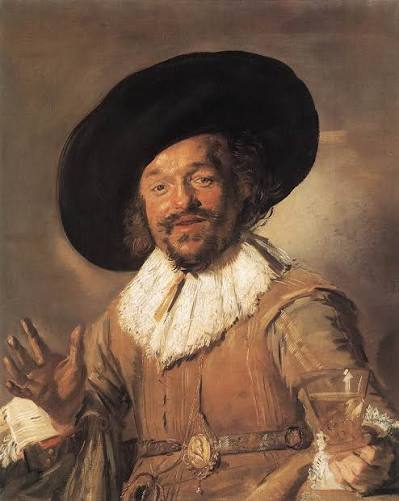
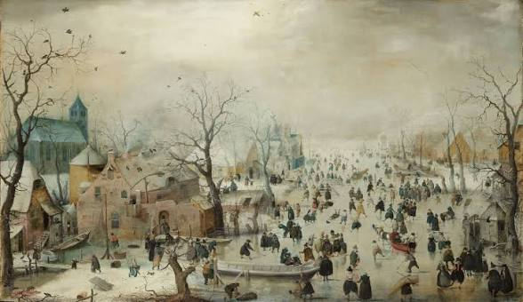

All Paintings

The Night Watch
Rembrandt van Rijn, 1642
A huge painting of a city guard company getting ready to march.

The Jewish Bride
Rembrandt van Rijn, c. 1665
A loving couple painted with thick, glowing layers of paint.

The Milkmaid
Johannes Vermeer, c. 1660
A maid pours milk in a quiet kitchen, lit by soft window light.

Street in Delft
Johannes Vermeer, c. 1658
One of only a few city scenes ever painted by Vermeer.

The Merry Drinker
Frans Hals, c. 1628
A laughing man with a glass of wine, painted with fast brush strokes.

Winter Landscape with Ice Skaters
Hendrick Avercamp, c. 1608
A busy frozen river full of tiny skaters and villagers.
Quick Overview
| Painting | Artist | Year |
|---|---|---|
| The Night Watch | Rembrandt van Rijn | 1642 |
| The Jewish Bride | Rembrandt van Rijn | c. 1665 |
| The Milkmaid | Johannes Vermeer | c. 1660 |
| Street in Delft | Johannes Vermeer | c. 1658 |
| The Merry Drinker | Frans Hals | c. 1628 |
| Winter Landscape with Ice Skaters | Hendrick Avercamp | c. 1608 |
Want to know more about Rembrandt's most famous work? Read about it on Wikipedia, or test yourself on the quiz page.